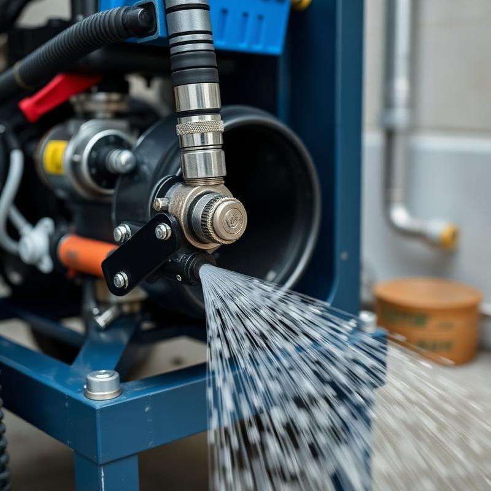

Desentupimento de Esgoto
Desentupimento de esgoto residencial e comercial em Araucária com equipamentos hidrojateamento de alta pressão. Resolvemos entupimentos de esgoto com rapidez e eficiência.
Serviço profissional de desentupimento em Araucária e região metropolitana de Curitiba. Atendimento de emergência 24h com equipamentos de última geração. Ligue agora: (41) 99188-7007
A Desentupidora Araucária oferece soluções completas de desentupimento para residências, comércios e indústrias. Ligue: (41) 99188-7007
Desentupimento de esgoto residencial e comercial em Araucária com equipamentos hidrojateamento de alta pressão. Resolvemos entupimentos de esgoto com rapidez e eficiência.
Serviço completo de desentupimento residencial em Araucária: pias, ralos, vasos sanitários, colunas de gordura e tubulações em geral.
Desentupimento comercial e industrial em Araucária. Atendemos restaurantes, shoppings, condomínios e empresas com contratos de manutenção preventiva.
Serviço de limpa fossa e limpeza de fossa séptica em Araucária com caminhão limpa fossa. Esgotamento de fossas, caixas de gordura e poços de recalque.
Hidrojateamento de alta pressão para desentupimento de tubulações em Araucária. Tecnologia que limpa completamente as tubulações.
Desentupimento industrial em Araucária com equipe especializada. Atendemos indústrias da região com equipamentos de grande porte.
A Desentupidora Araucária é referência em serviços de desentupimento na cidade de Araucária e região metropolitana de Curitiba. Com mais de uma década de atuação, nossa equipe altamente qualificada utiliza equipamentos de hidrojateamento de alta pressão e tecnologia de ponta para resolver qualquer tipo de entupimento com rapidez e eficiência. Oferecemos atendimento emergencial 24 horas, garantia nos serviços e os melhores preços da região.
A Desentupidora Araucária atende toda a cidade e região metropolitana:
Não sofra mais com entupimentos! A Desentupidora Araucária resolve seu problema com rapidez e garantia. Atendimento 24 horas. Orçamento grátis!
A Desentupidora Araucária é a empresa líder em serviços de desentupimento na cidade de Araucária. Com mais de 10 anos de experiência no mercado, oferecemos soluções completas para desentupimento de esgoto, desentupimento de pia, desentupimento de vaso sanitário, desentupimento de ralo, limpa fossa, hidrojateamento e muito mais. Ligue agora para (41) 99188-7007 e solicite seu orçamento gratuito.
O serviço de desentupimento de esgoto em Araucária é rápido, eficiente e com garantia. A Desentupidora Araucária utiliza equipamentos de hidrojateamento de alta pressão para desobstruir completamente as tubulações, removendo gordura, raízes, terra, areia e outros resíduos que causam o entupimento.
O serviço de limpa fossa em Araucária conta com caminhões limpa fossa equipados com sistema de sucção a vácuo para esgotamento de fossas sépticas, caixas de gordura e sumidouros em Araucária. Recomendamos a limpeza da fossa a cada 12 meses.